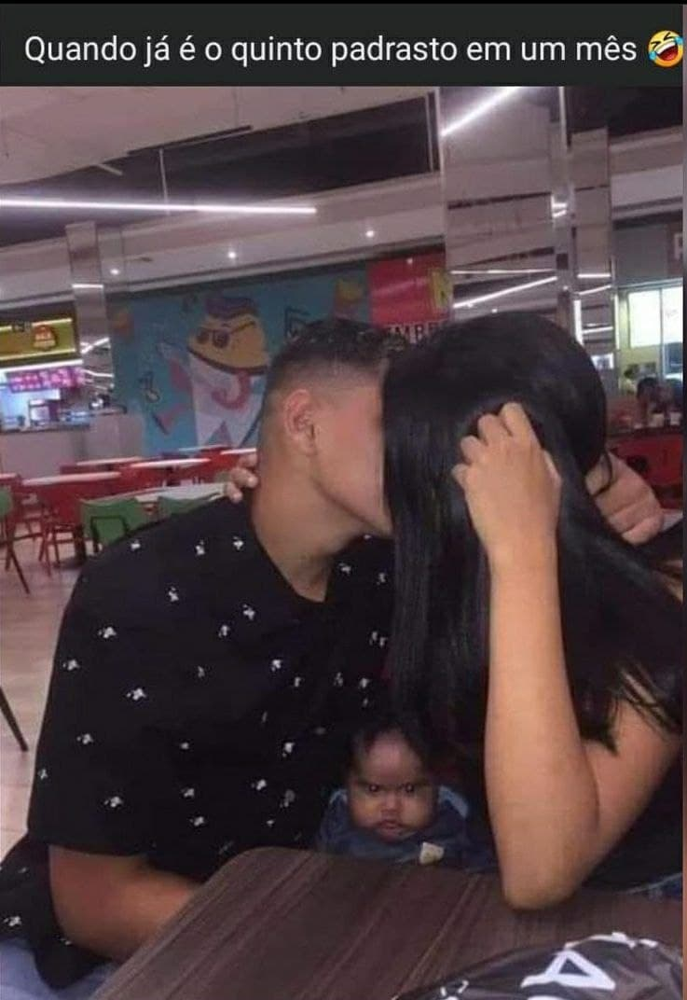

Saiba porquê você não deve se casar
data 17/11/2021
Porque não casar ? Talvez você seja um homem honrado e tradicional, que sonha em ter uma mulher honrada e de costumes tradicionais, cara eu sinto muito falar isso para você, mas esse tipo de mulher não existe mais, quer dizer pode até existir, mais será quase impossível você achar, então nem crie esperanças meu parceiro, eu recomendo você criar um doguinho. A grande maioria das mulheres hoje em dia, estão corrompidas pela sociedade moderna, o feminismo esta acabando com as mulheres de bem que existe, e muitas quando acorda para a vida, ou já esta muito rodada ou já tem 8 filhos sem pai, de qualquer forma arrependida ou não as mulheres modernas são um perigo para os homens de bem, então eu reforço para você, não se case. Bem já que não existe mais mulher tradicional e a maioria e uma mulher moderna o que você pode fazer, bem meu amigo você pode evoluir na vida e esquecer esse negocio de casamento, mas se mesmo assim você quer casar e engatou o namoro com uma moderna eu vou te falar aqui o que pode acontecer com você, mas primeiro eu vou descrever para você o que e uma mulher moderna, de forma bem resumida, já que ao olhar para as vestimenta de uma mulher moderna, você identifica na hora.
A mulher moderna e a mulher que e ao contrario da mulher tradicional, a moderna tem um trabalho, mais para ela sair com você, você terá que pagar tudo que ela consumir, ela tem amigos e amigas quando ela resolver ir para balada com eles, você tem que ficar calado, ela tem tatuagens piercing no umbigo e faz questão de mostra para todos, ela e de esquerda mesmo sem ter ideia do que e essa ideologia política e ela fala mal de homens nas redes socais. Mas se mesmo assim você decidiu seguir em frete e resolveu investir em uma moderna, saiba que a sua vida de casado ou namorado mesmo vai ser uma bosta, você vai virar um capacho e ainda e capaz desta mulher trair você na sua frente e falar que e normal, fora que você vai perder suas bolas o respeito e a dignidade, e tem mais se essa mulher resolver que não quer mais você, ela pode por você na cadeia fácil, e muito provavelmente você não terá direito a defesa, hoje em dia somente a palavra da mulher vale como prova para condenar você, mesmo que você não tenha feito nada.
Igualdade no casamento Bem antigamente, no tempo da mulher tradicional as coisas funcionava assim, o marido sustentava a mulher ele saia para trabalhar se sacrificar e estudar, quando ele voltava para casa, a casa estava limpa e organizada muitas vezes a comida estava pronta, e se eles tivessem filhos, quem cuidava da educação e do bem esta das crianças era a mulher, porem isso mudou e mudou radicalmente, a mulher moderna trabalha, se ela tiver filhos quem cuida dos filhos são os outros, poder ser a mãe dela a creche uma baba, ou a criança pode esta sendo doutrinada em alguma instituição. Se você resolver se casar hoje em dia o que vai acontecer e basicamente o seguinte, ao chegar do trabalho, você não vai descansar, você vai lavar uma louça, vai por as roupas para bater, vai fazer a manutenção da casa, vai dividir as tarefas, isso esteja ela trabalhando ou não, caso você não faça isso, pode ter certeza que em algum grupo das redes sociais ela vai falar mal de você, vai falar que você não ajuda ela em nada e que pensa em te trocar ou até mesmo trair isso. As contas são todas suas. Antigamente... o marido pagava todas as contas da casa e fornecia tudo que a mulher precisava e até mesmo dava dinheiro para ela, afinal ela não trabalhava e passa o dia todos os dias cuidando da casa e dos filhos, mas isso mudou agora elas trabalha não e mesmo ? (risos) Que nada mesmo com elas trabalhando, você ainda tem que pagar tudo e manter ela, alguns até querem dinheiro para ir ao salão de beleza, mas ela não quer gasta a grana dela, ela quer a sua grana, afinal você e o marido, foi por essa desigualdade no casamento que las lutaram.

Além de tudo que foi citado acima o casamento pode trazer outros prejuízos aos homens, eu pontuei algumas delas. 1 - Os homens casados tentem a ver menos ou deixar de ver os amigos Após o casamento alguns até deixa de lado por completo aquele final de semana com os amigos, a família também fica de lado, o casamento e uma responsabilidade, agora o homem tem que trabalhar e se dedicar a isso, o homem não consegue sair sozinho, dependendo da mulher, qualquer coisa que o cara queira fazer sem ela a mesma vai arma um show. 2 - Auto estima prejudicada Como este cara não ver a família e amigos vive para o trabalho e a mulher esta sempre na cola, a sua auto estima diminui, as vezes até sua masculinidade fica prejudicada, ele se sente um nada, e a saudade do vida de solteiro e sempre constante. 3 - Prejuízos financeiros O homem casado sempre vai ter menos dinheiro que homens solteiros, ainda mais se ele recebe menos de um salário mínimo, a mulher pode até trabalhar, mais a maioria se recusa a ajudar em casa, e as vezes anda tira mais dinheiro do marido, quanto ao homem solteiro, ele e livre para pagar as contas conforme ele quiser, sem uma mulher para ficar fiscalizando, se tudo esta pago. 4 - Prejuízos financeiros após divorcio. A mulher vai ficar com a maior parte em uma provável separação, e se tiver filhos esse prejuízo se agrava mais ainda, se torna prejuízo emocional, fora que até o que você conquistou sozinho com muitos sacrifícios, pode ficar com ela, e a maioria se casa já pensando em tirar isso. 5 - Instabilidade emocional Muita gente ignora mas muitos homens após a separação entre em depressão e pode acabar se matando, e isso não e raro de acontecer porem não e noticiado, a perca de património e o afastamento dos filhos de forma precoce, faz muitos homens procurar o caminho do suicídio, até porquê alem de perder tudo ou quase tudo o indivíduo tem que pagar pensão, tem que conviver vendo a ex presentear os seus filhos com outro pai, ou fiar sabendo que a mesma esta fazendo um rodízio de padrasto “CLARO ISSO NÃO ENQUADRA TODAS AS MULHERES”. Bem resumindo não se case, e este prologo ainda não acabou em breve vamos trazer mais conteúdos .
